Rúa do Vilar, 28 · junto a la CatedralAbierto todos los días
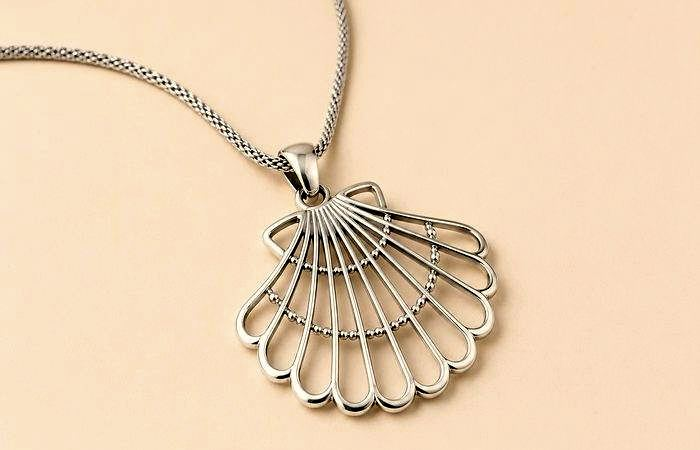
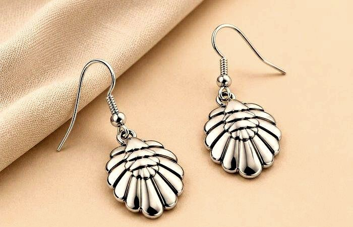
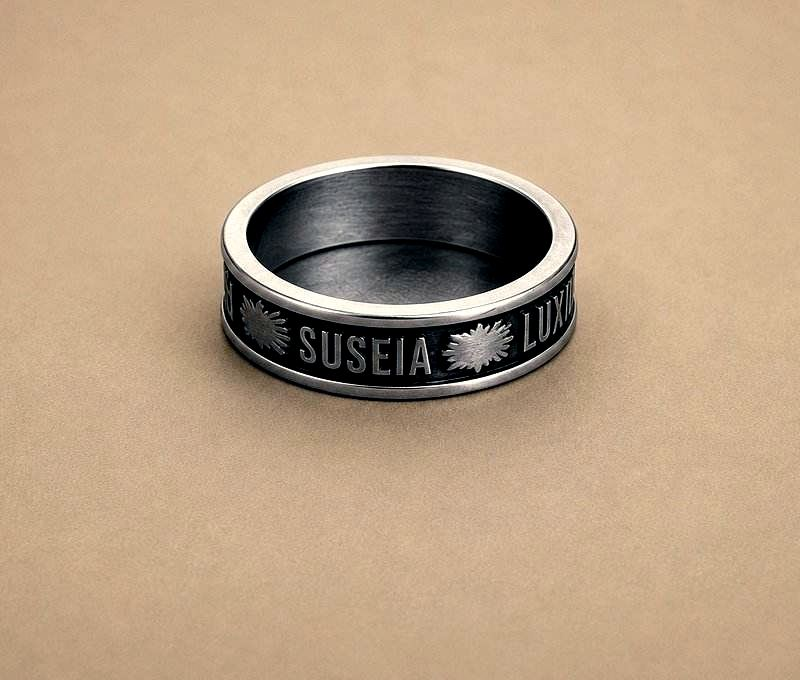
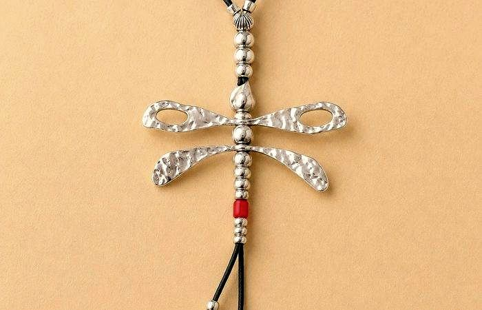
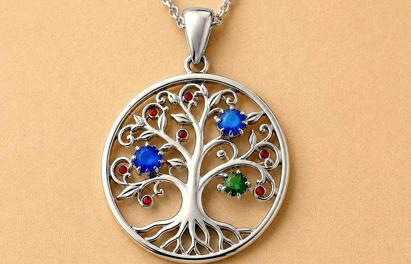
925Plata de leyHecha a mano en Galicia
Plata de ley 925Vieira del CaminoAzabache gallegoArte devocionalCerámica jacobeaCruz de SantiagoLleva Santiago contigoBuen Camino, peregrinoPlata de ley 925Vieira del CaminoAzabache gallegoArte devocionalCerámica jacobeaCruz de SantiagoLleva Santiago contigoBuen Camino, peregrino
Nuestra historia
El alma de Galicia, en tus manos.
En el corazón de Santiago de Compostela, Crisol reúne lo mejor de la artesanía gallega: piezas únicas de plata de ley 925 y piezas con azabache de la tierra, llenas de historia e identidad jacobea.
Nuestros artesanos trabajan con técnicas heredadas de generación en generación. Cada pieza lleva el alma de Compostela.
925 Plata de ley certificada y acabados artesanales
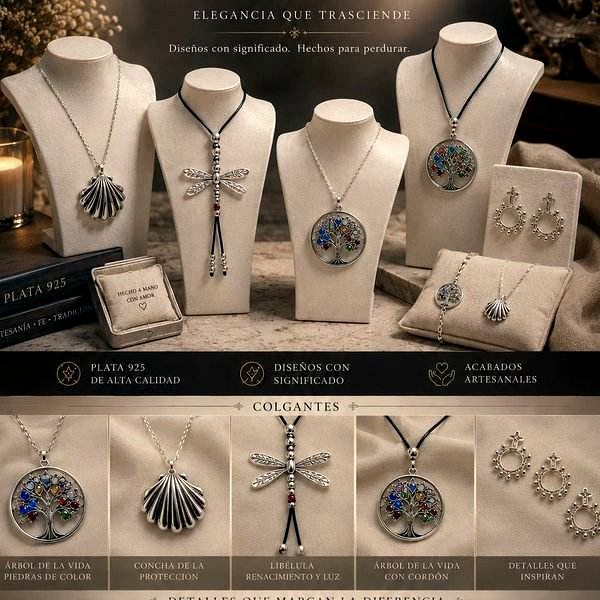
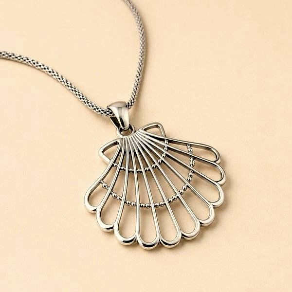
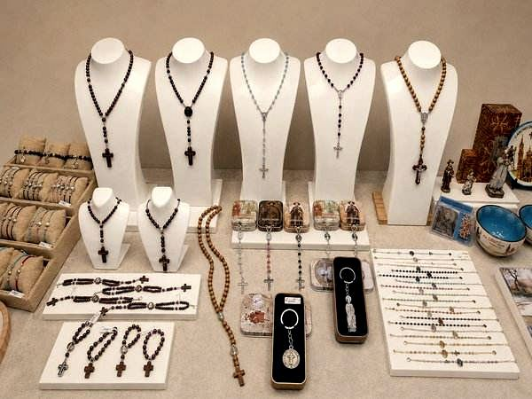
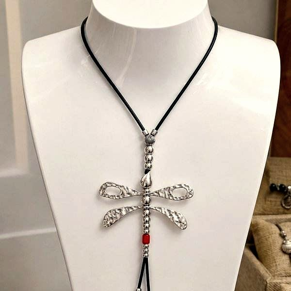
Artesanía jacobea
Nuestras colecciones
Cinco colecciones únicas, hechas a mano en Galicia, para llevar el espíritu del Camino contigo.
05
01
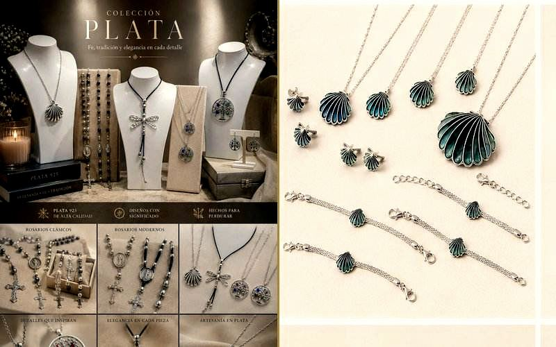
Joya artesanal
Plata
Joyas artesanales en plata de ley 925 con los símbolos más icónicos del Camino: vieiras, árbol de la vida y cruces trabajadas con maestría. Fe, tradición y elegancia en cada pieza.
El guardián negro de Galicia. Colgantes, figas, pulseras y piezas únicas elaboradas con azabache auténtico, la piedra semipreciosa del Camino que ha protegido a peregrinos desde tiempos inmemoriales.
«Más allá»: siempre adelante. Alianzas, colgantes y pulseras Ultreia con los símbolos del Camino, diseñados en plata y acero inoxidable de alta calidad y con acabados artesanales únicos.
Rosarios clásicos y modernos, anillos-rosario, escapularios y medallas elaborados en madera, plata y azabache. Piezas con profundo significado espiritual para peregrinos y devotos del Camino.
La cerámica artesanal de Ulla, pintada a mano por maestros alfareros gallegos. Piezas únicas con motivos jacobeos —vieiras, cruces de Santiago y símbolos del Camino— en el inconfundible estilo azul de la tradición cerámica de la comarca de Ulla.
Cuatro emblemas han acompañado a los peregrinos del Camino de Santiago a lo largo de los siglos. Símbolos de fe, protección y perseverancia que Crisol recoge en cada una de sus piezas.
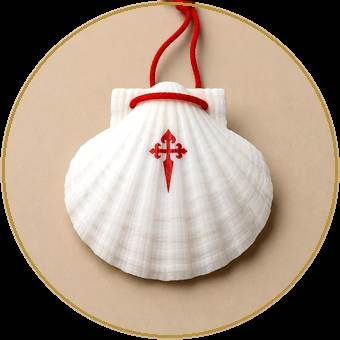
La Vieira
La concha del peregrino
La concha, símbolo oficial del peregrino jacobeo. Sus líneas convergen como todos los caminos que llevan a Compostela.
Cruz de Santiago
La insignia jacobea
Cruz latina de gules que simula una espada, con los brazos rematados en flor de lis y una pomela en la empuñadura. Símbolo de la Orden de Santiago.
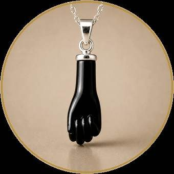
El Azabache
El guardián negro
Negro, lustroso y profundo. La piedra semipreciosa vinculada al Camino de Santiago. Protección y buen augurio desde siempre.
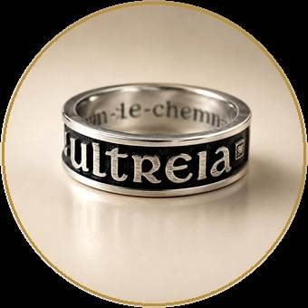
Ultreia
El grito del peregrino
Siempre adelante. El grito de ánimo que los peregrinos se lanzan unos a otros en el Camino. El espíritu de Crisol.
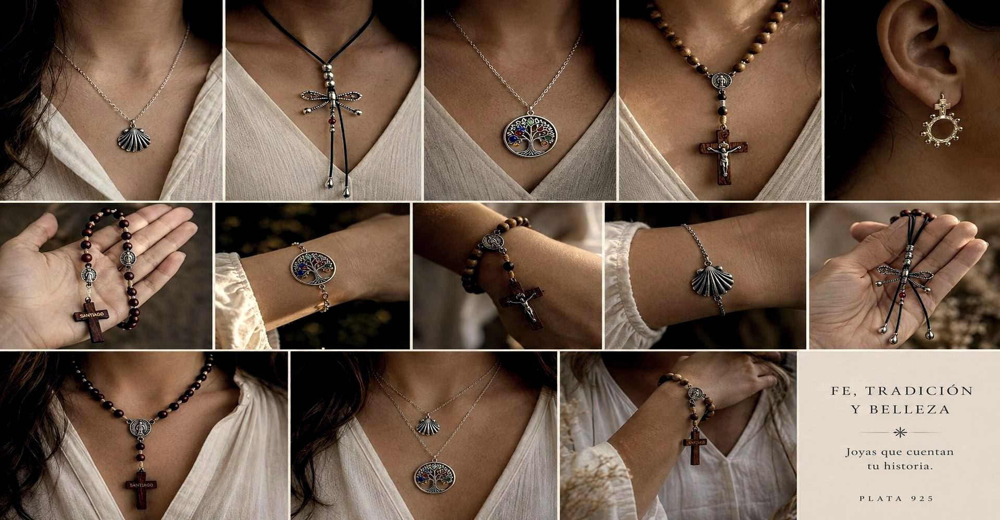
Buen Camino
Buen Camino, Peregrino.
Cada año, cientos de miles de peregrinos de todo el mundo llegan a Santiago de Compostela. Crisol está aquí para recibirles con la autenticidad que el Camino merece.